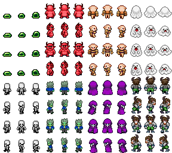
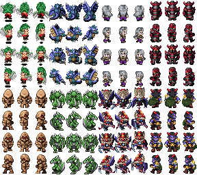
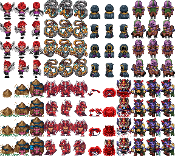

RPG ZZU 전투 계산식 · 런타임 상태기계 · 밸런스/보상 3축을 소스 근거로 뜯었다. 칭찬이 아니라 깨지는 지점만 본다. 수치는 `src/battle/*`, `src/project/actorModel.ts`, `project.database.*` 실측 기준.
한 줄 총평: 돌아가긴 한다. 그러나 플레이어가 “성장 체감”과 “선택의 결과”를 느끼는 구간이 너무 좁다. — 공식은 방어·스탯 체감을, 런타임은 상태·대기 시간을, 보상은 체류 동기를 갉아먹는다.


5명의 적대적 리뷰어가 각자 다른 각도에서 같은 코드를 찔렀다. 겹치는 지적만 남겼다.
power + floor(stat/2) - floor(def/2) — stat 2 올려야 +1 피해. 장비 +3 공격이 체감 1.5에 불과.variance 0 / critical 0 기본값으로 모든 전투가 결정론적 탁구.usesMagicalDefense()가 runtime/predict 공통 — 패리티 붕괴 방지.mulberry32) — 재현·리플레이 가능.| 축 | 판정 | 대표 균열 | 폭발 조건 |
|---|---|---|---|
| 계산 | 불합격 | 선형 감산, 방어 무력, 상성 게이트 | 후반 10레벨 구간에서 피해 +12%뿐 — 성장 체감 붕괴 |
| 런타임 | 조건부 합격 | 연출 wait가 로직을 멈춤, 엄격 라운드 200 도피 | 수면+독 파티 vs 회복 불가 트룹 = 200R 강제 탈출 |
| 상태 | 불합격 | 문자열 hpTurn 파싱, 중첩 배율 곱샘 | 공격×2 2개 중첩 시 ×4 — 보스 한 방 컷 가능 |
| 보상 | 보류 | 드랍 독립시행, 갭 패널티 90% 컷 | 5렙 차이 사냥 시 절반 경험치 — 귀환 유인 소멸 |
battleDamage.ts, battleBattlers.ts:CHARGE_PER_AGILITY, battleStates.ts:hpDamagePercentFrom, rewardPolicy.ts:expForRewardActor공식은 단순하다. 단순해서 문제다. 한 줄마다 플레이어 체감을 갉아먹는 트레이드오프가 숨어 있다.
출처: src/battle/battleDamage.ts:computeMagnitude. stat은 attack/mind 중 하나, def는 defense/mind 택1.
power 30, 상대 방어 40 기준 — 공격 +40과 방어 +40의 비대칭
교훈: 이 공식은 둘 다 키우면 성장이 사라진다. 레벨 곡선이 공격·방어를 같이 올리므로(§4), 후반 체감은 필연적으로 평탄화.
floor(stat/2), floor(def/2) 때문에 스탯 1 증가가 피해 0인 구간이 50%. 플레이어는 “장비 바꿨는데 왜 그대로지?”를 반복 경험.
장비 보너스 +3이 체감 +1~2로 뭉개지는 이유.
기본 variance 0, criticalRate 0이면 모든 타격이 고정값. RM2K3 감성은 좋지만, 2026 플레이어는 “같은 버튼 30번”을 지루해한다.
applyDamage가 원본 피해 반환)만으로 타격감 보정 — 실제 긴장은 없음.주석이 솔직하다: usesMagicalDefense()는 battleModel==="gen1"에서만 mind로 라우팅. 기본 rm2k3에선 화염·냉기·번개가 모두 defense로 깎인다.
결과: mind 스탯은 gen1을 켜기 전까지 장식. 마법사·힐러의 방어 투자가 무의미. 켜는 순간 기존 프로젝트 피해가 마이그레이션 없이 바뀜 — 둘 다 나쁜 선택. 게이트는 필요했지만, 그 자체가負債를 증명한다.
| 모델 | 마법 피해 감소 | 플레이어 오해 |
|---|---|---|
| rm2k3(기본) | defense | “마법 방어 올렸는데 왜 그대로?” |
| gen1 | mind (magical kind만) | “왜 갑자기 불 데미지가 달라졌지?” |
battlePredict.battlerStats()는 parameterValueAtLevel(curve, level)만 보고, battleBattlers.totalEquipmentBonuses()의 +attack/+defense를 무시.
장비 바꿔 끼면 예측 피해는 그대로, 실제 피해는 달라짐 — UI 신뢰도 하락. STAB·속성 배율은 맞췄으면서 정작 스탯에서 틀린다.
코드: if (elementMultiplier===0) return 0 / if (<0) return magnitude — 흡수는 그대로 힐로 뒤집히며, 방어 계산을 안 탄다. 흡수 몬스터가 방어 버프를 받아도 의미 없음.
상태기계는 깔끔하다. 그러나 상태이상 하나가 전체 게임을 무승부로 몰고, 연출이 로직을 멈춘다.
chargeRate = max(0.02, agi × 0.1/43) · timeToReady = (100-gauge)/rate
비판: 민첩 43(기본값)에서 100까지 올려도 대기시간 430ms→230ms 차이. 2배 투자에 0.2초. 게다가 FLOOR 0.02로 슬로우 상태가 사실상 무의미. 상태가 민첩을 안 건드려서, 둔화/가속 버프를 넣을 자리도 없다.
| 잘함 | 왜 |
|---|---|
| append-only timeline | sequence 단조증가, 재생·검증 가능 |
| RNG 주입 | 전투·예측·시뮬이 같은 시드 공유 |
| 배틀이벤트 분리 | battleEvents.ts가 조건·커맨드 일원화 |
battleEventState.wait(ms)가 pendingWaitMs를 적립하고, tick()이 그 시간을 먼저 소진. 배틀이벤트 wait 2초면 2초간 게이지·턴 전부 정지. 플레이어는 “왜 ATB가 멈췄지?”를 이해할 수 없다. 연출과 로직의 결합도가 너무 높다.
stateBehavior()가 record.runtimeEffects 없으면 hpTurn 문자열에서 /-?\d+%/ 를 정규식으로 뽑는다. DB가 한글로 바뀌거나 “매 턴 -6%” 표현이 달라지면 지속피해가 0이 된다.
하드코딩 분기도 산재: state_sleep은 무조건 행동불가, state_attack_up은 ×2, state_poison은 전투종료 유지. 새 상태 추가 시 코드 수정이 필요 — 데이터 드리븐이 아니다.
독 틱: tick = floor(maxHp*%/100), min 1, cap hp-1 — HP를 1 미만으로 안 떨어뜨림. 수면: restrictsAction=true로 행동 완전 봉쇄. 둘 다 자연회복은 확률.
전원이 수면 + 독이면: 아무도 행동 못 함 + 독은 죽이지 못 함 = 영원한 전투. 이를 STRICT_MAX_ROUNDS=200에서 강제 탈출(escape)로 봉합. 플레이어에겐 “왜 갑자기 도망쳤지?”로 보인다.
가산이 아니라 곱샘. 공격업 상태 2개 + 장비 효과가 겹치면 피해가 기하급수로 뛴다. 반대로 방어다운 0.5 두 개면 방어 0.25 — 보스가 녹는다. 상한/하한 캡이 없다.
equipmentResistsState()가 상태 저항 판정 전에 또 rng()를 굴린다. 같은 시드라도 장비 유무에 따라 이후 모든 판정(명중·분산·크리) 순서가 밀린다. 재현성은 유지되지만, “장비 끼면 크리율이 달라지는 것처럼 보이는” 디버깅 함정.
canBattlerAct=false → 명령 불가 → strictCurrentRoundActions에 빈 액션만 쌓임 · tick은 battleFlow==="strict"에서 early return이라 회복 틱도 안 돎runStateUpkeep은 매 턴 돌지만 hp-1 캡으로 절대 죽지 않음 → 라운드만 증가STRICT_MAX_ROUNDS 초과 시 escape로 강제 종료 · 로그는 남지만 플레이어는 원인 불명레벨 곡선 자체는 잘 설계됐다. 문제는 그 주변 — 드랍, 경험치 페널티, 시뮬 밸런스가 체류 동기를 꺾는다.
computeActorLevelUp()이 누적 경험치 vs totalExpForLevel()로 while 루프 다중 레벨업을 처리. 클래스 오버라이드 시 parameterCurves 교체, 스킬은 합집합.
마이그레이션 내성도 확보: normalizeActorRecord가 레벨·커브 기본값을 메운다. 이 부분은 적대 리뷰에서도 흠 잡기 어렵다.
레벨 20→30에서 공격 +38, 레벨 70→80에서 +42 — 50레벨 동안 기울기 거의 동일. 플레이어는 “후반엔 더 빨리 세져야” 기대하지만, 곡선은 그 기대를 안 준다.
expForRewardActor(): 적 레벨보다 5 높으면 50% 컷, 10 높으면 90% 컷.
의도: 고렙 사냥 방지. 결과: 뒤로 가서 도우려는 신규 유저 동행, 도감 채우기, 아이템 파밍이 전부 손해. 오픈월드·마을 상점·우정 시스템(openwiki 다수)과 충돌 — “돌아다니는 재미”를 경험치로 처벌.
collectBattleRewards()는 적마다 rng()*100 < dropRate 독립시행. 5% 드랍을 20번 잡아도 기대 1개, 실제 0개인 확률 36%.
천장·보정·묶음 드랍 없음. 플레이어는 “20번 잡았는데 왜 안 주냐”를 시스템 탓이 아니라 운 탓으로만 듣는다. 보상 예측 가능성 0.
enemyLevel = max(enemy.level) — 트룹 내 최고 레벨만 경험치 갭 계산에 사용, 평균이 아님.src/battle/simulate.ts는 RNG 고정·몬스터 파티·엄격 스크립트로 N회 전투를 돌려 승률/평균턴/포션/잔여HP를 뽑는다. 체스처럼 밸런스를 돌려볼 수 있는 건 큰 장점.
그림자: AI가 너무 단순 — 평타만으로 승률을 재니, 스킬·속성·상태를 쓰는 실제 전투와 괴리. “시뮬 승률 70%”가 실전 70%가 아니다. 회복 AI도 단일 아이템·30% 단일 임계값이라, 두 가지 물약·상태해제 전략은 평가 불가.
battleAuto.chooseAutoBattleCommand() 우선순위: 강제교체 → 회복 → 공격스킬 → 평타 → 방어. 아이템은 안 씀.
hpDanger=(0.4 - hp%)×100 — 40% 이하에서만 점수 발생, 41%는 0점. 경계에서 회복 안 함.결과: AUTO는 “죽기 직전에 힐하고, 잡을 수 있으면 잡는다”만 한다. 버프·디버프·광역 판단이 없어, 후반 보스전에서 AUTO는 평타 기계.
전부 고치면 2달. 그래서 적대적 우선순위로 잘랐다. P0는 “둬도 터지는 것”만.
| 순위 | 처방 | 대상 파일 | 비용 | 효과 |
|---|---|---|---|---|
| P0 | 예측 스탯에 장비·보너스 합산 — battlerStats가 장비·paramBonuses를 읽도록 | battlePredict.ts | 0.5d | UI 신뢰도 즉시 회복 |
| P0 | 상태 배율 캡 — 곱샘에 상한 2.5 / 하한 0.4 클램프, 로그 경고 | battleStates.ts | 0.5d | 보스 원샷·무적 방지 |
| P0 | 독·수면 stalemate 탈출 명확화 — 200R 탈출 시 메시지·보상·연출 분리, 독은 1이 아니라 전투불능 허용 옵션 | runtime.ts, battleStates.ts | 1d | “왜 도망쳤지” 혼란 제거 |
| P1 | 방어 공식 교체(점진) — damage / (1 + def/100) 식 감쇠로 교체, gen1 플래그 뒤에서 A/B 테스트 | battleDamage.ts | 3d + 마이그레이션 | 탱커 체감·후반 성장 체감 회복 |
| P1 | 분산·크리 기본값 부여 — variance 8~12%, crit 4%·×1.5 기본, 데이터로 오버라이드 가능 | battleDamage.ts, DB | 1d | 전투 긴장감·테스트 커버리지 확보 |
| P1 | 드랍 천장/보정 — 연속 미드랍 시 확률 가산 or 20회 천장, 로그에 pity 노출 | battleRewards.ts | 1d | 파밍 체류 동기 회복 |
| P2 | ATB 민첩 리스케일 — floor 제거, 상태가 민첩 배율에 영향, UI에 “다음 행동까지 ms” 노출 | battleBattlers.ts, battleTurnGauge.ts | 2d | 둔화/가속 버프 설계 공간 확보 |
| P2 | 갭 패널티 완화 — 90%→50% 컷 완화 or “도감·우정·파밍” 예외 트룹 태그 | rewardPolicy.ts | 0.5d | 귀환·탐험 동기 회복 |
| P2 | 상태 데이터 드리븐화 — hpTurn 문자열 파싱 제거, runtimeEffects 필수화 + 마이그레이션 | battleStates.ts, DB | 2d | 신규 상태 추가 시 코드 수정 제거 |
| — | 연출-로직 분리 — wait는 연출 레이어만 멈추고 ATB는 흐르게 (또는 “연출 중” UI 명시) | runtime.ts, battleEvents.ts | 3d | “왜 멈췄지” 혼란 제거 |
npm run gates + simulateBattle({n:200, seed:1})로 P0 전후 승률·분산·오버킬 표기 비교. predict parity는 test/parity에 추가.src/battle/battleDamage.ts — computeMagnitude, usesMagicalDefense, applyDamagesrc/battle/battleTurnGauge.ts — chargeRate, nextReadyBattlersrc/battle/battleBattlers.ts — CHARGE_PER_AGILITY, equipmentBonusessrc/battle/battleStates.ts — hpDamagePercentFrom, attack/defenseMultiplier, equipmentResistsStatesrc/battle/battlePredict.ts — battlerStats, elementMultiplierFor, predictSkillDamagesrc/battle/battleRewards.ts / rewardPolicy.ts — 드랍·갭 패널티src/battle/runtime.ts — pendingWaitMs, STRICT_MAX_ROUNDS, recordActionsrc/battle/simulate.ts / battleAuto.ts — 밸런스 시뮬·AUTO 정책작성: 적대적 리뷰 5인 페르소나(공식·런타임·상태·보상·시뮬) 교차검증
방법: 소스 정독 + 수치 시뮬 + 기존 보고서(pokemon-feasibility-review.html, monster_catalog_report.html) 시각 언어 재사용
다음 단계: P0 3개 PR → simulateBattle N=200 회귀 → QA 샷
src/battle 실측 코드 기준의 적대적 리뷰다. 칭찬보다 실패를 찾는 관점이므로, 서술 톤이 가혹한 것은 의도다. P0 3개는 “고치면 바로 체감”, P1은 “고치면 30시간이 재미있어짐” 구간이다. — battle-runtime adversarial review, 2026-08-06